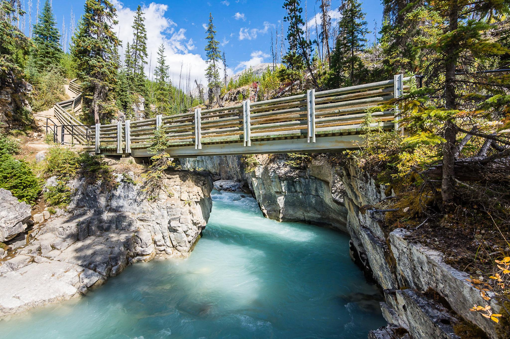

← 트래킹
🥾 Marble Canyon
Kootenay National Park
⭐ 깊은 협곡과 에메랄드빛 계곡물을 가장 가까이에서 만나는 산책 코스

📅 우리 일정
Day 3 오후
🏞 기대 풍경
💎 맑고 푸른 협곡의 계곡물
🌉 협곡을 가로지르는 여러 개의 목조 다리
🪨 수천 년 동안 침식된 석회암 협곡
🌲 울창한 숲과 시원한 계곡 풍경
📸 다리 위에서 내려다보는 대표 포토 스팟
🗺 추천 동선
➡️ 주차장에서 출발
🌉 여러 개의 전망 다리를 지나 협곡 감상
📸 마지막 전망대에서 사진 촬영
↩️ 같은 길로 천천히 돌아오기
📏 기본 정보
🚶 걷는 거리
왕복 약 2km
⏱ 소요 시간
약 40~60분
💪 난이도
매우 쉬움
♿ 유모차
일부 구간 가능
🚻 편의시설
✔ 무료 주차장
✔ 화장실 (주차장)
✔ 전망 다리 여러 곳
✖ 매점 및 식당 없음
🎒 준비물
👟 편한 운동화
💧 물 500ml
🧥 얇은 바람막이
📷 카메라
🕶 선글라스
💡 여행 Tip
✔ 협곡 위를 지나는 여러 개의 다리마다 풍경이 조금씩 달라 천천히 둘러보는 것을 추천합니다.
✔ 다리 위에서 아래를 내려다보면 깊은 협곡과 에메랄드빛 계곡물을 가장 잘 감상할 수 있습니다.
✔ 전체 코스가 짧아 Day 3 일정 중 잠시 들르기 좋은 장소입니다.
✔ 오전에는 협곡에 햇빛이 들어와 물빛이 더욱 선명하게 보이는 경우가 많습니다.
✔ 길이 비교적 평탄하지만 일부 구간은 계단이 있으므로 편한 운동화를 추천합니다.
📍 Google Maps
🗺 트레일 지도
← 트래킹